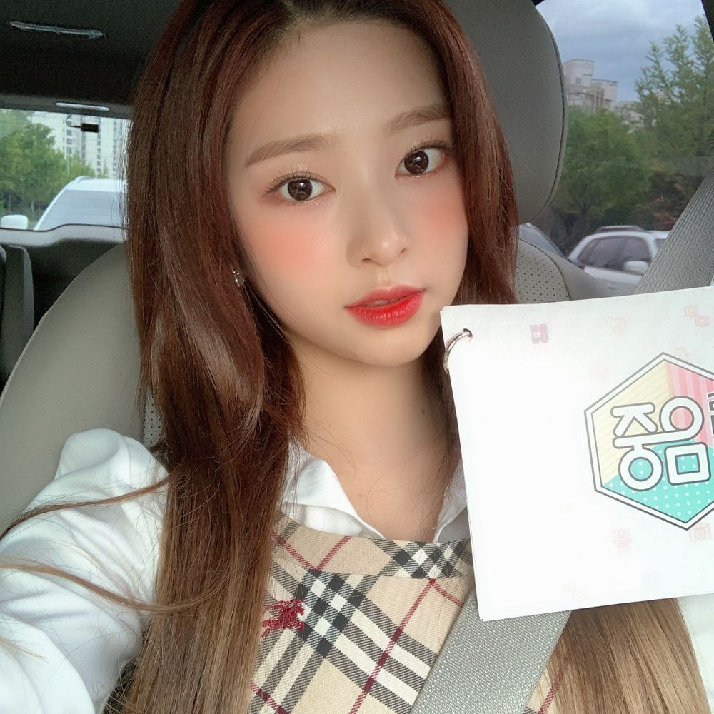

뿅!!퇴근합니당❣️
오늘은 아침부터 뭔가 바빴넹
그래도 어제저녁까지 리허설도 열심히 해놓고
틈틈이 대본도 봤어요!! 잘 끝낼 수 있을지 걱정했는데
오늘 하루도 무사히 끝났어요😊
난 고백하자면 사실 멀티가 불가능한 인간이어요
두가지 이상을 같이 하면 오류가 나요..
이호도 그래요..? 아님 나만..?
그래서 항상 우선순위를 정해두고 하나씩 끝내는 편이랍니당
가끔은 멀티가 잘 되는 친구들이 부러워요!!
어떻게 하는 겁니까!! 같이 합시다🧐
암튼 오늘 이호도 고생 많았어요💕
토요일 저녁인데 맛있는 거 먹고 푹 자길!

そして！今日久しぶりに日本のWIZ*ONEに会いました！
今日の朝なんか体が重いなと思っだけど
ショーケースを始めたら 嘘のように体が軽くなりました!
やっぱりWIZONEが最高❣️
久しぶりに会ってもっともっとうれしいかった
이호はどうでしたか？！
もし今日私たちに会えなかったとしても悲しまないでね！
이호がどこへいってもいつも応援してます。
今日もありがとう😊
いい夢見てね！